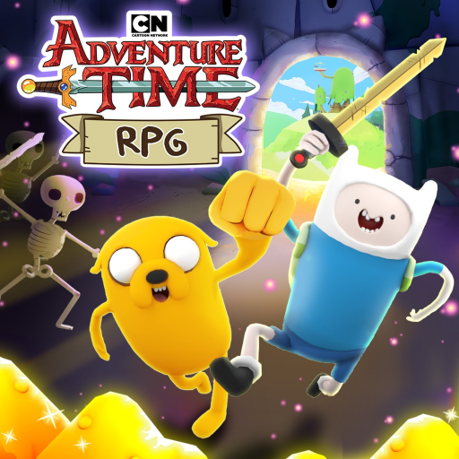

✅ Adventure Time RPG: quest-uri de Halloween până miercuri, apoi vin Candy Zombies (28 oct, 18:00)

Adventure Time are joc oficial pe Roblox: „Adventure Time RPG [Beta]”, făcut de Oh My Glob Games (grup verificat). Joci cu Finn, Jake, Princess Bubblegum, Marceline sau chiar un Banana Guard. E un joc mic: azi, luni 26 oct, la ~16:20 (ora României), avea ~1,6K jucători online (MDS citise ~1,3K).
✅ ACUM: Update 2, „Halloween Quests”
- De miercuri, 21 oct, 18:00, până miercuri, 28 oct, 18:00 (ora României).
- Quest-uri limitate cu Princess Bubblegum, pentru skin-ul Princess Bubblegum Lab coat.
- Quest-uri noi apar la fiecare 2 zile. Termină-le pe toate până dispar!
🧟 URMEAZĂ: Update 3, „Candy Zombie Adventure”
- De miercuri, 28 oct, 18:00, până miercuri, 4 nov, 18:00 (ora României).
- Aventura nouă „Night of the Candy Zombies”: o joci și ai șansa să deblochezi buddy-ul Starchy 🍬.
- Plus un pachet Premium de Halloween: Zombie Jake, Zombie Banana Guard și stickere de Halloween.
🚂 Tot pe pagina jocului: Update 4, de pe 4 nov, 18:00, până pe 11 nov, 18:00. Urci în Dungeon Train până la Level 100 pentru skin-ul exclusiv Dungeon Train Jake, disponibil doar până pe 30 noiembrie.
Pe scurt: tot ce e mai sus vine de pe pagina oficială Roblox a jocului și de pe evenimentele ei.
▶️ Joacă: https://www.roblox.com/games/118915268278945/Adventure-Time-RPG
Prinzi skin-ul Princess Bubblegum până miercuri? 🎃
Follow pe TikTok @vexu_online și abonare pe YouTube la VEXU Online. Follow = Au ce bile! 💥